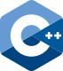
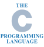

C++ широко используется для разработки
программного обеспечения, являясь одним
из самых популярных языков программирования.
Область его применения включает создание операционных
систем, разнообразных прикладных программ, драйверов
устройств, приложений для встраиваемых систем,
высокопроизводительных серверов, а также игр.
Существует множество реализаций языка C++,
как бесплатных, так и коммерческих и для различных
платформ. Например, на платформе x86 это GCC,
Visual C++, Intel C++ Compiler,
Embarcadero (Borland) C++ Builder и другие.
C++ оказал огромное влияние на другие языки
программирования,
в первую очередь на Java и C#.
Полное описание на wikipedia
 Си (англ. C) — компилируемый статически типизированный язык программирования общего назначения, разработанный в 1969—1973 годах сотрудником Bell Labs Деннисом Ритчи как развитие языка Би. Первоначально был разработан для реализации операционной системы UNIX, но впоследствии был перенесён на множество других платформ.
 C# (произносится си шарп) — объектно-ориентированный язык
программирования. Разработан в 1998—2001 годах группой
инженеров компании Microsoft под руководством Андерса Хейлсберга
и Скотта Вильтаумота как язык разработки приложений для платформы
Microsoft .NET Framework. Впоследствии
был стандартизирован как ECMA-334 и ISO/IEC 23270.
C# (произносится си шарп) — объектно-ориентированный язык
программирования. Разработан в 1998—2001 годах группой
инженеров компании Microsoft под руководством Андерса Хейлсберга
и Скотта Вильтаумота как язык разработки приложений для платформы
Microsoft .NET Framework. Впоследствии
был стандартизирован как ECMA-334 и ISO/IEC 23270.
Язык был создан Никлаусом Виртом в 1968—1969 годах после его участия в работе комитета разработки стандарта языка Алгол-68. Язык назван в честь французского математика, физика, литератора и философа Блеза Паскаля, который создал одну из первых в мире механических машин, складывающую два числа. Первая публикация Вирта о языке датирована 1970 годом; представляя язык, автор в качестве цели его создания указывал построение небольшого и эффективного языка, способствующего хорошему стилю программирования, использующему структурное программирование и структурированные данные.
 Python (в русском языке встречаются названия пито́н или па́йтон)
— высокоуровневый язык программирования общего назначения с
динамической строгой типизацией и автоматическим управлением
памятью, ориентированный на повышение производительности
разработчика, читаемости кода и его качества, а также
на обеспечение переносимости написанных на нём программ
Python (в русском языке встречаются названия пито́н или па́йтон)
— высокоуровневый язык программирования общего назначения с
динамической строгой типизацией и автоматическим управлением
памятью, ориентированный на повышение производительности
разработчика, читаемости кода и его качества, а также
на обеспечение переносимости написанных на нём программ